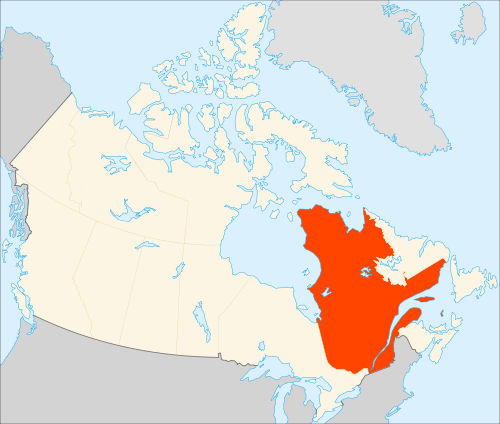

 Квебе́к (фр. Québec [keˈbɛk]) — первая по площади и вторая по населению провинция Канады. Административным центром Квебека является город Квебек c 735 тыс. жителей, тогда как самый большой город в Квебеке (и самый большой франкоязычный город за пределами Франции) — Монреаль. Квебек расположен на северо-востоке Северной Америки, между провинцией Онтарио и атлантическими провинциями Канады, на юге граничит с США. Река Святого Лаврентия — главная водная артерия провинции вытекает из Великих озёр и впадает в Атлантический океан. Квебек — самая большая по территории провинция Канады, его площадь 1 667 441 км². Население Квебека — 7,8 миллионов человек. Единственный официальный язык — французский, который является родным для более чем 80 % населения. История Квебека началась с экспедиции Жака Картье, которого называют отцом Новой Франции, в 1763 году провинция перешла под контроль Великобритании, а затем стала частью Канадской конфедерации. Католическая церковь играла значительную роль в духовной и социальной жизни общества вплоть до 1960-х годов. В 1960-е годы произошла Тихая революция, которая знаменовала собой секуляризацию квебекского общества и эпоху перемен в экономической, социальной и политической жизни провинции. Политический статус Квебека определён в конституции Канады. Провинция обладает полномочиями принимать законы во многих областях, в том числе имущественном и гражданском праве, отправлении правосудия, здравоохранения и образования. Периодически в Квебеке вспыхивают дебаты о статусе провинции. Сепаратисты настаивают на отделении Квебека, в то время как сторонники федерализма настаивают на сохранении статус-кво. Различные проекты конституционных реформ или независимости, в том числе референдумы 1980 и 1995 годов, не привели к отделению от Канады, но позволили провинции добиться значительной автономии в решении как внутренних, так и некоторых внешних (иммиграция) вопросов. В отличие от остальной Канады, правовая система Квебека имеет смешанное происхождение. Частное право восходит к гражданскому романо-германскому праву, а публичное право восходит к англосаксонскому праву. Аэрокосмическая отрасль, биотехнологии, фармацевтическая промышленность, металлургия, информационные технологии и индустрия культуры являются одними из ключевых секторов экономики Квебека. Наличие природных ресурсов, в том числе древесины и гидроэнергии, также являются важным фактором создания материальных благ.
География
Парк Омега
Квебек, самая большая провинция Канады представляет собой обширную территорию, по большей части очень мало заселённую. Более 90 % поверхности Квебека является частью Канадского щита. В эпоху французской колонизации и Новой Франции территория Квебека представляла собой полоску земли шириной в несколько десятков километров по обе стороны от реки Святого Лаврентия, где первые колонисты расчищали и обрабатывали участки земли.
Квебек делит сухопутную границу с четырьмя штатами на северо-востоке США (штат Мэн, Нью-Гэмпшир, Нью-Йорк и Вермонт) и тремя канадскими провинциями (Нью-Брансуик, Онтарио и Ньюфаундленд и Лабрадор). Существует пограничный спор из-за принадлежности Лабрадора (границы Лабрадора официально не признается в Квебеке) По морю Квебек граничит и с территорией Нунавут, Островом Принца Эдуарда и Новой Шотландией.
В 1912 году район залива Юнгава Северо-западных территорий был включён в состав Квебека канадским парламентом. Этот обширный северный регион включает сегодня Нунавик на север от 55-й параллели и регион залива Джеймса с его гидроэлектрическим потенциалом, который сделал возможной постройку гидроэлектрического комплекса La Grande.
Квебек обладает одними из крупнейших пресноводных запасов в мире, которые занимает 12 % его площади. Он владеет 3 % от возобновляемой пресной воды в мире, тогда как только 0,1 % населения. В Квебеке более полумиллиона озёр, в том числе 30 с площадью более 250 квадратных километров и 4500 рек впадающих в Атлантический океан, в залив Св. Лаврентия, а также Северный Ледовитый океан, залив Джеймса, Гудзонов залив и залив Юнгава.
Св. Лаврентия и её устья составляет основу развития Квебека на протяжении веков. Река Святого Лаврентия — одна из самых крупных в Северной Америке. Она вытекает из озера Онтарио и заканчивается обширным эстуарием, переходящим в залив Святого Лаврентия и Атлантический океан. Это один из самых больших судоходных путей в мире (длина 1 200 км) и основная речная ось североамериканского континента. Долина Святого Лаврентия это плодородный регион, где доминирует мясо-молочное животноводство, выращивание зерновых и овощных культур, а также культура сахарного клёна.
Крупнейшим внутренним водоёмом является водохранилище Каньяписко созданный в рамках проекта для производства гидроэлектроэнергии в заливе Джеймс. Озеро Мистассини является самым крупным природным озером в Квебеке.
Квебек состоит из весьма разнообразных ландшафтов. Он подразделяется на три больших геологических региона.
- Лаврентийская возвышенность занимает около 95 % территории Квебека и является частью Канадского щита. Лаврентийская возвышенность сложена породами архейского и протерозойского возраста. Её южную границу составляют Лаврентиды — горная цепь, состоящая из невысоких, округлых холмов, лесов и многочисленных озёр.
- Долина реки Святого Лаврентия — это низменность, образованная низкими берегами одноимённой реки. На юге возвышаются Аппалачи — горная цепь с округлыми лесистыми вершинами, перемежающаяся возделываемыми равнинами. Южный склон Аппалачей граничит с США.
- Арктические низменности окружают Гудзонов залив. Крайний север Квебека образован субарктическим регионом Нунавут — территорией эскимосов.
Климат
В Квебеке различимы четыре времени года: зима, весна, лето и осень. Продолжительность солнечного дня составляет 8 часов в декабре, когда он самый короткий. Продолжительность солнечного дня меняется с широтой. На Крайнем Севере наблюдается северное сияние и полярный день. Квебек разделяется на четыре климатические зоны: арктическую, субарктическую, континентальную и морскую на востоке провинции. С юга на север, средняя температура колеблется летом от +20 °C и +5 °C, а зимой от −10 °C и до −25 °C. В периоды сильной жары и холода, температура может достигать точки 35 °C летом и −40 °C зимой в Квебеке. Рекорд зимних осадков был установлен зимой 2007—2008 годов, когда уровень осадков достиг более чем пяти метров снега в провинции Квебек, а средний показатель, полученный в зимнее время составляет 3 метра. Кроме того, зима 2010 года была самой теплой и сухой, из когда-либо зарегистрированных более чем за 60 лет. Снежный покров присутствует от 4-х месяцев (на юге в Монреале) до 6-ти месяцев (на севере в Радиссоне). Количество снега, выпадающего в этот период в Квебеке или в Монреале, больше чем в таких северных городах как Хельсинки или Осло. Температура понижается в основном под влиянием северных ветров. Города полуострова Гаспе ощущают смягчающее влияние океана, делающее зиму более мягкой, а лето более прохладным.